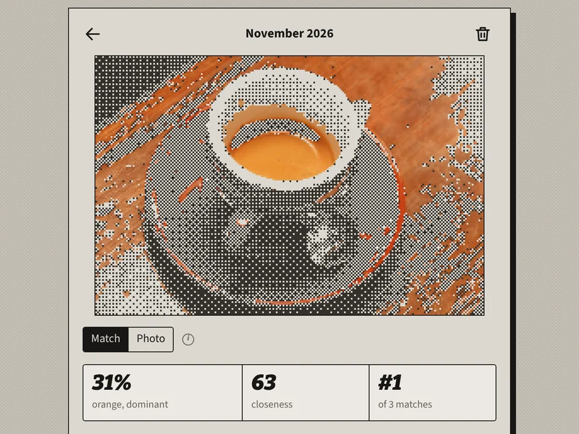
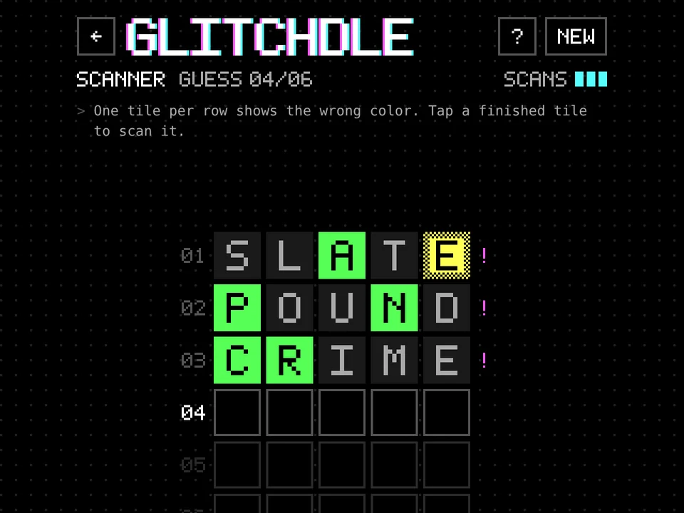

Research
Agentic pipelines that search for research papers in rounds. Three locally hosted language models refine the queries and judge relevance across more than 2,000 papers.
PLAINTEXT Lab, Penn State, 2026 to present
Project
A ReAct agent harness built from scratch in Python, with tool dispatch, skill loading and LLM-based context compaction. It runs a coding agent and a chess agent.
CMU 11-768 AI Agents, 2026
Project
A smolagents CodeAgent for the GAIA eval, with tools for web and Wikipedia search, YouTube transcripts, and attached files.
Hugging Face Agents Course, 2026
Project
A model that forecasts PM2.5 at 12 Beijing stations 24 hours ahead, built in R with data.table and XGBoost.
Kaggle, 2026
Project
Clinical features engineered in R with temporal constraints, so post-sample events cannot leak into predictions.
Kaggle, 2026
Project
A stock recommendation site for beginners, built with three teammates at a hackathon. I built the FastAPI backend and most of the React interface.
SteelHacks, 2025
Side projects
Playground
-

Photos, peeled by color. Pick a color and see which of your photos have it.
-

A five-letter word game where the colors lie. One tile in every guess shows the wrong color.